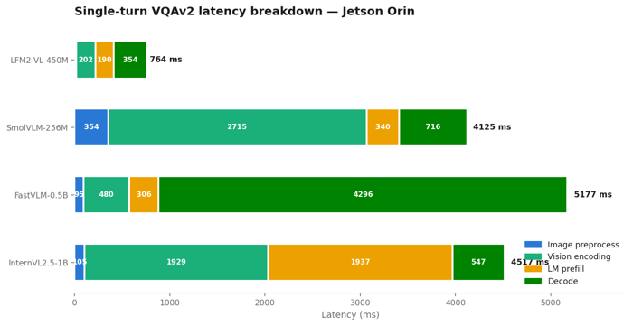
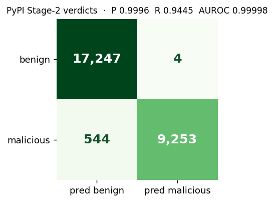

I'm a master's student in computer science at the University of Texas at Arlington, where I work on getting vision-language models to run on hardware that was never really meant for them.
The question I keep coming back to is a practical one. You have a compact VLM and a Jetson with 6 GB of usable memory. Will it run? And when it doesn't, which resource gave out first — the context window, the KV cache, or the framework's own working memory? Answering that honestly has meant profiling five model families across four platforms, instrumenting inference down to individual pipeline stages, and spending more time than I'd like inside JetPack containers.
Before graduate school I spent two years as a data scientist at Royal Cyber, building RAG pipelines and document-intelligence systems for clients in retail, banking, and healthcare. I also work on the security side of all this — prompt-injection red-teaming, and graph-based detection of malicious packages in the Python supply chain.

We profile five compact VLMs across an A6000, a Jetson AGX Orin, a Jetson Orin Nano, and a Raspberry Pi 5 under multi-turn, multi-image workloads. Two findings surprised us. Parameter count turns out to be a poor predictor of latency — LFM2-VL-450M beats the smaller SmolVLM-256M by 1.8–2.4×. And under stateless re-prefill, the KV cache is only a small slice of peak memory; most of it is framework working memory that scales nonlinearly with context. We fit an empirical model for that growth which predicts OOM boundaries at 0.8% error in-device, and show its coefficients transfer across devices after a short local calibration.

Signature-based scanners — OSV, pip-audit, Snyk, Dependabot — have zero recall on a package that nobody has catalogued yet. So we stopped looking for signatures. Stage 1 treats the PyPI dependency graph as structure: Leiden communities, a 14-dimensional feature vector of metadata and graph position, and Isolation Forest to rank what looks out of place. Stage 2 takes the top candidates, parses their source into API-call and data-flow graphs, and asks a GNN whether the behavior matches download-decode-execute or unsafe deserialization. A live monitor runs the pipeline against newly published releases.
Quantization, pruning, low-rank factorization, QLoRA, and combinations — benchmarked against two different failure modes: models that can't load at all, and models that load but aren't usable. Results live in a companion data repo.
Breaks a single inference pass into image preprocessing, patch embedding, vision encoder, projection, encoder and decoder forward, prefill and decode. On the FP32 CPU baseline the vision encoder alone accounts for 4.8 s of a 13.1 s pass.
A framework for running prompt-injection and jailbreak attacks systematically across domains, producing comparative robustness rankings. Extended to small models on edge devices, where reduced capacity changes the attack surface in ways that aren't obvious.
Middleware with a neutral message envelope and rules-based mapping — topic to URI, QoS to CON/NON, Content-Format inference — plus an optional LLM path for JSON normalization when the rules don't cover it.
FastAPI backend, retrieval-augmented context, 85% response accuracy on legal Q&A.
Intro programming in C. Graded exams, quizzes, and coding homework, and proctored the closed-book exams where students write and trace C by hand — no compiler, no IDE.
MS, Computer Science (AI specialization) — University of Texas at Arlington, 2025–2027.
BSc, Software Engineering — National University of Sciences & Technology, Islamabad, 2020–2024. CGPA 3.61/4.0.
Previously — Data Scientist at Royal Cyber Inc. (2023–2025), building production LLM applications and Azure/Databricks data infrastructure for enterprise clients. AI Research Assistant at the NUST AI Lab (2023–2024), where I led an automated legal contract generation system that cut document preparation time by 60%.
Tools I reach for — PyTorch, Hugging Face, TensorRT and ONNX, PyTorch Geometric, igraph, Spark and Databricks, Docker, Jetson containers, CrewAI and AutoGen. Python mostly, C and C++ when the hardware demands it.